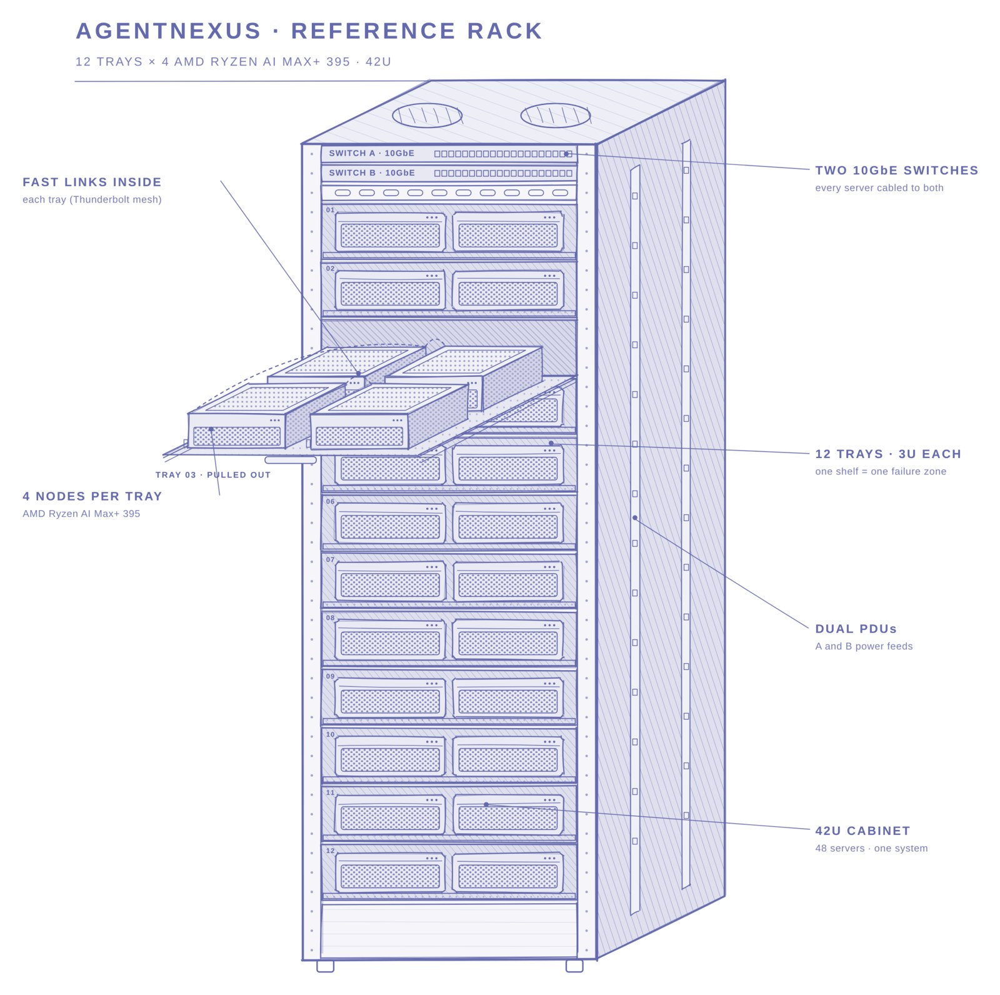

Agents that work across every site you run — gigafactories and storage fleets, factories and test stands, fabs and their suppliers, robot fleets and shipyards. They compare sites, plan maintenance and draft work orders and quality records within half a second, learn from production, and never move equipment.

Findings from every AgentMesh pod, cross-site patterns, the agents at work, how requests are routed, the plans waiting for sign-off and the skill adapters being trialled.
Deep-tech companies run more than one site: a factory and a test stand, a fab and its suppliers, gigafactory lines and a storage fleet, robot lines and the robots they ship. AgentNexus is where their agents work across all of them — drafting records and work orders in English or Spanish.
Findings from every cell and module line, and thermal and off-gas findings from mostly unstaffed storage sites, in one view. Agents assemble the quality, inspection and incident records reviewers and insurers ask for.
A test-stand anomaly is traced back to the production lot that built the part. Agents draft non-conformance reports and quality records for your engineers to sign.
Utilities findings from the fab and from its gas, chemical and parts-cleaning suppliers in one place, so a failing pump at a supplier is caught before it reaches the fab.
Robot cells across every line and site, and the robots, drones and vessels you ship: joint and motor health compared across the fleet, with fielded systems syncing findings when they reconnect.
The same platform for commercial and defense work, including new shipyards and autonomous-vessel yards. AgentNexus runs in your own enclave, on hardware you own, so program data stays inside the boundary you already accredit.
Construction progress, balance-of-plant condition reports and work orders across new power and advanced nuclear sites — always advisory, never on safety systems.
AgentMesh keeps the fast loop at each line and site. AgentNexus works at business speed across all of them — and never moves equipment.
An AgentMesh pod sends what it found, over an encrypted link.
The right agent wakes in its sealed sandbox on any free server.
The Unovie Model Router picks the model and skill adapter; the agent compares sites and history.
Work orders, quality records and reports go to MES, QMS, SAP or Maximo, and to your people.

The Unovie Agent Runtime gives every agent a sealed sandbox. Idle agents sleep and wake on demand, network access is allow-listed, and passwords never reach the agent.
The Unovie Model Router and Decision Models pick the model and skill adapter for every request. The Unovie Reasoning Model answers; Vector Memory powers search.
The Kiln turns production outcomes into new skill adapters — tested and trialled before they go live.
Twelve shelves of four servers run as one system. Data is copied across shelves; the Mesh Arbiter moves work when something stops.
Twelve shelves of four servers in one 42U rack — the same server as the AgentMesh pod.

The AI engineering lab: where new skill adapters are trained, and a small AgentNexus for one site.
Robotics and DeepVision tools in the fab report to the same AgentNexus.
Estimates from measurements on single servers; we replace them with measured numbers after our bench tests.
Designed against NIST SP 800-53 controls and the NIST AI Risk Management Framework from the first line of code — evidence for your assessors, not a certificate from us.
Each agent runs in a sealed sandbox with allow-listed network access, and credentials never reach the agent — access control and identification as SP 800-53 describes them.
Agent actions, model routing decisions and drafted records are written to the signed Evidence Log, for audit and non-repudiation.
New skill adapters are trained, tested on unseen cases, trialled and switched on only if better — with one-step rollback. That is AI RMF Measure and Manage, and SP 800-53 change control.
AgentNexus runs on hardware you own, inside the boundary you already accredit — the natural home for CUI and export-controlled programs under SP 800-171 and CMMC.
AgentNexus is a cloud-native platform on open standards, inside your own enclave.
The 48 servers run as one CNCF Certified Kubernetes cluster, with CNCF graduated and incubating projects for service networking, replicated storage and observability.
The Agent Runtime, Model Router, Decision Models, Reasoning Model, Vector Memory and Kiln are separate services with typed contracts — each scales, updates and rolls back on its own, across twelve failure zones.
Every agent is a sealed, sandboxed workload that sleeps when idle and wakes on any free server — thousands of agents on one rack, scheduled like any other cloud-native workload.
Declarative manifests, pinned images, rolling updates and standard observability — operated by your platform team, or by us as a service.
AgentMesh puts AI on the signals at every line, with safety decisions left to your control systems. AgentNexus brings the fleet together.
Turnkey Edge-AI — fixed time, fixed cost, full responsibility.